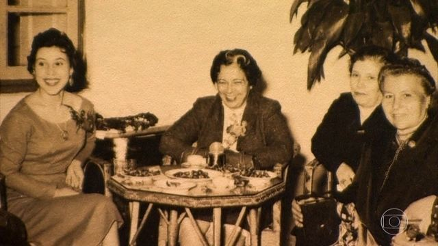

Como foi criado?
O Brigadeiro foi inventado no Brasil depois da Segunda Guerra Mundial (1939-1945). Naquele tempo, era muito difícil conseguir leite fresco para se fazer receitas de doces. Dessa forma, descobriram que a mistura de leite condensado e chocolate resultava em um docinho fácil e rápido de fazer. Porém, a origem do brigadeiro é bastante única pois acredita-se que envolve diretamente mais aspectos políticos.
Por que o doce se chama "Brigadeiro"?

Em 1945, o Brasil estava em época de campanha para eleição de um novo presidente. É dito que o candidato Eduardo Gomes, cuja patente militar era Brigadeiro, foi a inspiração para o nome do docinho no qual suas eleitoras batizaram como “doce de brigadeiro”. O doce foi um sucesso, mas o candidato acabou por não ser eleito.
Nessa época, Brasil vivia um momento de transição política. Após o fim do Estado Novo e a deposição de Getúlio Vargas, o país se preparava para eleições presidenciais diretas, que marcariam a redemocratização. Um dos principais candidatos era o Brigadeiro Eduardo Gomes, militar da Aeronáutica e herói da Revolta dos 18 do Forte. Ele foi lançado à presidência com o apoio da União Democrática Nacional (UDN), representando os interesses das elites urbanas e defendendo uma política liberal e antipopulista.
Quem criou?
Uma das versões é dito que com o objetivo de arrecadar fundos para o candidato, a doceira Heloísa Nabuco de Oliveira preparou e levou para um dos comitês de senhoras da sociedade que apoiavam a campanha do brigadeiro e promoviam reuniões requintadas. Com a popularização, ele passou a ser produzido em maior quantidade para ser distribuído nas outras reuniões.
Assim, em vez do “santinho” tradicional do candidato, as mulheres que trabalhavam na campanha, distribuíram ou vendiam o docinho nesses encontros para ganhar votos e dar ainda mais visibilidade.
Quando começou a ser conhecido?
Durante a década de 50 o nome foi abreviado e o doce espalhou-se por todo o país, sempre com uma excelente recepção. Com o tempo, o brigadeiro foi ficando cada vez melhor. Para enfeitá-lo e deixá-lo mais saboroso, foi adicionado o chocolate granulado. Além disso, surgiram versões diferentes inspiradas no doce.